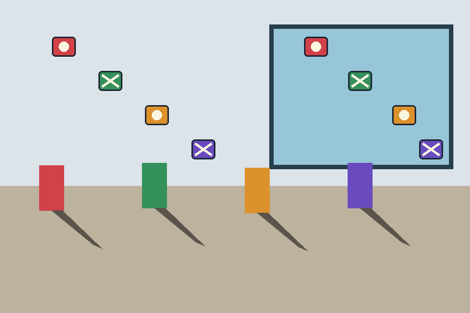
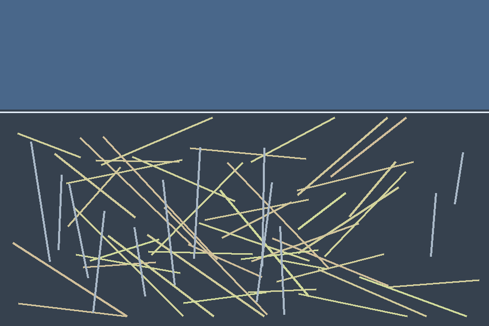
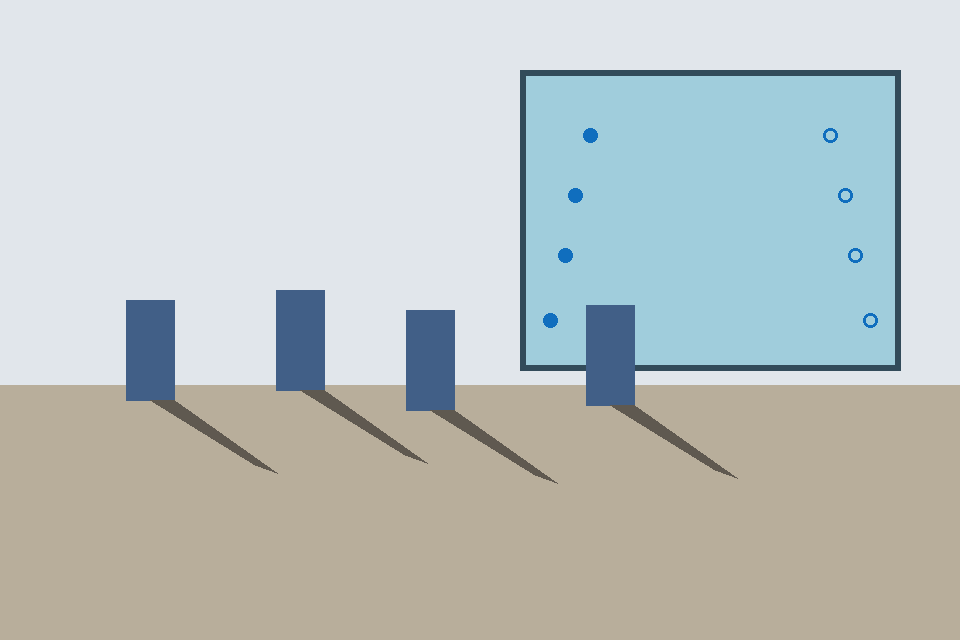
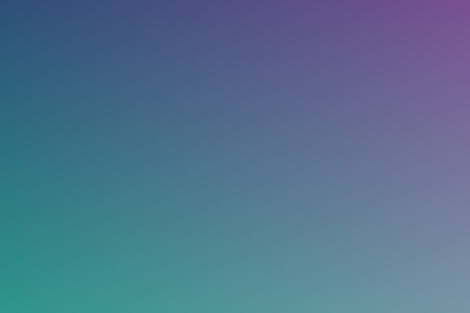

CSS background fixture D
This page uses tracked synthetic geometry fixtures to exercise image discovery, viewport capture, local inference, badges, and optional physics output. It is a wiring demo—not an accuracy benchmark or a real-versus-AIGC ground-truth set.



